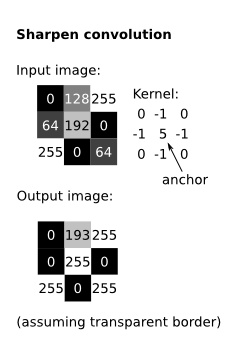
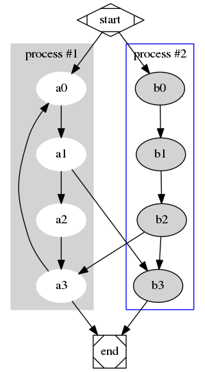
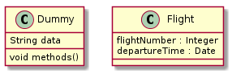

支持的特性
Table of Contents
注:
图片和示例均来自 Intro to AI by Joshua Eckroth
1 基本
- 一般强调
- 加粗
- 斜体
- 下划线
代码verbatim删除
- 定义
- α
- the utility of the best (highest-value) choice we have found so far at any choice point along the path in the "max" mode of minimax
- β
- the utility of the best (lowest-value) choice for the "min" mode of minimax
- 超链接
- 引用
绝望之为虚妄, 正与希望相同. — 鲁迅
2 表格
| N | N2 | N3 | N4 | sqrt(n) |
sqrt[4](N) |
|---|---|---|---|---|---|
| 1 | 1 | 1 | 1 | 1 | 1 |
| 2 | 4 | 8 | 16 | 1.4142136 | 1.1892071 |
| 3 | 9 | 27 | 81 | 1.7320508 | 1.3160740 |
3 代码
3.1 多语言高亮
- Translate this code from a
forloop into awhileloop that does the same thing.1: for i in range(1,100): 2: print "i = ", i
- Translate this code from a
whileloop into aforloop that does the same thing:i = 20 while (i > 0): print "i = ", i i -= 1
4 公式
We see that there are three variable assignments that make the whole expression true: \(x\) is false, \(y\) is true, and \(z\) is true; \(x\) is false, \(y\) is false, and \(z\) is true; and \(x\) is false, \(y\) is false, and \(z\) is false.
Boole's and De Morgan's Laws
- \(\neg F \equiv T\)
- \(\neg T \equiv F\)
f(n) =
\begin{cases} n/2, & \text{if \(n\) is even} \\ 3n+1, & \text{if \(n\) is odd} \end{cases}5 图片
5.1 居中

5.2 左侧
 Söderberg")
This photo of Lena (Lenna) Söderberg is the most widely used test image for computer vision applications. I have made a conscious decision to use this image for examples on this webpage. We should be respectful of the woman in the photo and know how this image came to be. Read about the photo at The Lenna story.
5.3 多图
 |
||
| Kernel is 10x10, all values equal to 0.01 | Kernel is 20x20, all values equal to 0.0025 | Kernel is 20x1, all values equal to 0.05 |
We can also achieve a sharpening effect.
|  |

From Wikipedia
{kind=link}
6 宏定义
6.1 summary 宏
Summary
- \(P(a|b) = P(b|a)P(a)/P(b)\) is Bayes' formula ("Bayes' rule", "Bayes' theorem"); it is just a rewrite of the rules of probability. It is required that \(P(b) \neq 0\).
- Sometimes, we only want to know if \(P(h_1|e) > P(h_2|e)\) (probability of hypothesis 1 is greater than probability of hypothesis 2, given the evidence). Then we only have to compare \(\alpha P(e|h_1)P(h_1)\) vs. \(\alpha P(e|h_2)P(h_2)\), where \(\alpha = 1/P(e)\), which we never need to calculate.
- \(P(h)\) is the "prior" of a hypothesis (cause/explanation) \(h\).
- \(P(h|e)\) is the "posterior" of \(h\), given evidence \(e\) is observed.
6.2 hidden 宏
member(5, [1, 2, 3]). member(X, [1, 2, 3]). foobar(1, [1, 2, 3]). foobar(1, [1, 1, 1]).
member(5, [1, 2, 3]). % --> false member(X, [1, 2, 3]). % --> X = 1 or 2 or 3 foobar(1, [1, 2, 3]). % --> true foobar(1, [1, 1, 1]). % --> false
7 扩展功能
先配置 Emacs 打开扩展:
(org-babel-do-load-languages 'org-babel-load-languages '( (dot . t) (sh . t) (ditaa . t) (plantuml . t)))) (setq org-plantuml-jar-path "~/bin/plantuml.jar")
7.1 ditaa
+--------------+ | | | Hello World! | | | +--------------+
7.2 Graphviz
digraph G {
subgraph cluster_0 {
style=filled;
color=lightgrey;
node [style=filled,color=white];
a0 -> a1 -> a2 -> a3;
label = "process #1";
}
subgraph cluster_1 {
node [style=filled];
b0 -> b1 -> b2 -> b3;
label = "process #2";
color=blue
}
start -> a0;
start -> b0;
a1 -> b3;
b2 -> a3;
a3 -> a0;
a3 -> end;
b3 -> end;
start [shape=Mdiamond];
end [shape=Msquare];
}

7.3 PlantUML
设置:
class Dummy {
String data
void methods()
}
class Flight {
flightNumber : Integer
departureTime : Date
}

8 加密
现生成 GPG 蜜月, 见 GPG入门教程 - 阮一峰的网络日志
用 GPG 加密, 比如我的
;; pgp (require 'org-crypt) (org-crypt-use-before-save-magic) (setq org-crypt-tag-matcher "secret") (setq org-tags-exclude-from-inheritance (quote ("secret"))) (setq org-crypt-key "TANG ZhiXiong")
加密后你就看不到了. 就像下一个标签. 保存的时候就会自动加密.
8.1 你看不到我 secret
–—BEGIN PGP MESSAGE–— Version: GnuPG v1
hQEMA/UK1fWnkkUVAQgAha+jHx4oRpLNxJ59utczwjQ37Zlq5XRVCwMqy6f5s27V sCagmo2Gqfj781qsgpaduIGKXULgdtbbZ97+6B08zgESQTkSLBMnmqMB9LEapwQO lHYlBdVq/bTbYU66/qbEZ+Jf8FfRQ/q1NUK7xSQhI8NMFaswNq7/wAeSPVOW0kuI RV8nk6AJgmLHRVrbkDHlhHZIVz1+1usZBQpkclWTg/y/9tNrargl0n2Q3IZQRl4c i7h6r6bYErTIT4DpEv+tih56LR6+Q9JIHZ03RGQhm5OqNlOSpcvP4B9bz/b5Sr9U 8BzQkdMMJzs91vjgrDRNT+SA3BRhDpo+0NzY0WF5v9LpAaN2Vm3n5w62v2W4zLzH QfbL4L52yzOyy5quYKlOvN9/UGZHXMbgFa1XuDE1w1TC2poVREebfk8GykBy9KLm PqJ//dtc2PRPEEsJRODDEqgyNzXsSwedFtMnV3+XczvFv5+YUUH40X0aNrvqA37x 5vhw6gwHsYNMFYTqMJzg4w4LFu/7qWJ9myqEXxT4Wv0lH0XuTZdlUgeleSCxqgLU DhmJH3+mbthWYLRT4Z+IZmWHqYgg1Cydr/sYJ1xVHbdKnbIGf1/uF1WnYQe4L41H JsZraG2pNQaLwSVdtOCf4BHXt+3X98BAVSO1I//V9igdnt++Od31PiBMaM+vfY7W ZVisvIzZiSc+goDyESK5oWJBciBizcH8d8WmLGi40PdRSEyX6mW9SGlm6Aofrkr9 qDbMfyqCo4O+QGjd3C7X1i7I0qMtRS0vWCIc8wmlZrSp8vHHm+YxHdczHpJnj292 1yr8fjkpRpJUljnd/lOLFFmSF+Mw2ByF5OHpgZmkhrFjRI6AQ1NmAEqPVgE9LDmm vfH8CaVhNXlzsNVvr9wI4xU645HOGMn16ygrJCy81cCgbm2X7PAGqhsi8TLkRr++ RvKS57a9CrLgIrmjUXsgCM9fHOcL4nUYHsspuCRGPg09+AW+1deOEyZ1mkzoC13+ BlNBjtqE+kQwB5u4F2GA2kvBJjrxKx/T9SD4pkFJmUvEcG6BtvNwQzpnwhHvlnJU wr51wELCB9sEF4cNjXRqXLpufrDimqsKuVq09CUklSKG0QFuGn4OotTZUSrDxjbP KFHiQVyDzj7kVO9K7qjDLZGNehkF/7AmKl3BtiaeVaJvEyPxzgUlADrhiNPCg7oR 7QEfuyxiTWs6fcYnWk/5lpjpeq0yP+xquMjQwCvQV3miXh4jWkoRXIgFPMy0/KTP LJKkN53uULd3UI1913lEleFPaPpzqekU2RA34cOFUtOGQefs2hYbuAbZSdPTUDho vDrvvLYRl+tSQAwFnR9MGcVTyPSC4+ROPGB+ABDOz4RkSBvLj1ORsVLk7iuHlOkL 0YH3uKwEY3R8clKvhEp68fSDCA8bI6+QfoJrUCrvI06+jLc3Bxq+4X+63OEfx1f3 Z+mMzpiT5q2Rj3mQL5Z7kwxAT55Hl/hRO/wkUkT3YegXiTJFNbZLnnMABccbk4uI zaOyAXHHL0JOIFeaxJWyVMLBUuVZDErksspWddk7f0gYIT1BCwrV4uV5D796Uyv/ 4YqUPIYJwC5K2XPj6o09cEOI39FfJOx34nvhxRxKou+O3Ofwld3OAgGdX4zl26Dl oUVyUlvFWbRQqOiDp0j3JZXSl9ObFFF4Tg== =3wea –—END PGP MESSAGE–—
8.2 如何揭密
org-decrypt-entry
9 导出
9.1 html
9.2 TODO LaTeX
待续
9.3 docx
cat file.org | perl -p -e "s/\[\[file:/[[/gi;" | pandoc -f org -o file.docx
配置七牛的命令行工具 qrsync:
{
"src": "publish",
"dest": "qiniu:access_key=<ak>&secret_key=<sk>&bucket=<b>&KeyPrefix=org/",
"debug_level": 1
}
Org 源码:
* 基本 - 一般强调 + *加粗* + /斜体/ + _下划线_ + ~代码~ + =verbatim= + +删除+ - 定义 + \alpha :: the utility of the best (highest-value) choice we have found so far at any choice point along the path in the "max" mode of minimax + \beta :: the utility of the best (lowest-value) choice for the "min" mode of minimax - 超链接 - 引用 #+BEGIN_QUOTE 绝望之为虚妄, 正与希望相同. --- 鲁迅 #+END_QUOTE * 表格 | N | N^2 | N^3 | N^4 | ~sqrt(n)~ | ~sqrt[4](N)~ | |---+-----+-----+-----+-----------+--------------| | / | < | | > | < | > | | 1 | 1 | 1 | 1 | 1 | 1 | | 2 | 4 | 8 | 16 | 1.4142136 | 1.1892071 | | 3 | 9 | 27 | 81 | 1.7320508 | 1.3160740 | |---+-----+-----+-----+-----------+--------------| * 代码 ** 多语言高亮 1. Translate this code from a =for= loop into a =while= loop that does the same thing. #+BEGIN_SRC python -n for i in range(1,100): print "i = ", i #+END_SRC 2. Translate this code from a =while= loop into a =for= loop that does the same thing: #+BEGIN_SRC python i = 20 while (i > 0): print "i = ", i i -= 1 #+END_SRC ** 索引 #+BEGIN_SRC c -n -r #include <stdio.h> int main( int argc, char **argv) (argv) { int a = atoi( argv[1] ); (atoi) int b = atoi( argv[2] ); printf( "a + b = %d + %d = %d\n", a, b, a+b ); return 0; } #+END_SRC - 第 (argv) 行 的 ~argc~ 是 count of args (arguments), ~argv~ 是 arguments 数组. - 第 (atoi) 行 的 ~atoi~ 把 ~char *~ 转化为 ~int~. * 公式 We see that there are three variable assignments that make the whole expression true: $x$ is false, $y$ is true, and $z$ is true; $x$ is false, $y$ is false, and $z$ is true; and $x$ is false, $y$ is false, and $z$ is false. Boole's and De Morgan's Laws - $\neg F \equiv T$ - $\neg T \equiv F$ \begin{matrix} 1 & x & x^2 \\ 1 & y & y^2 \\ 1 & z & z^2 \\ \end{matrix} f(n) = \begin{cases} n/2, & \text{if $n$ is even} \\ 3n+1, & \text{if $n$ is odd} \end{cases} * 图片 ** 居中 #+BEGIN_CENTER ./images/lena.jpg #+END_CENTER ** 左侧 #+BEGIN_HTML <img align="left" src="images/lena.jpg" alt="Lena (Lenna) Söderberg" title="Lena (Lenna) Söderberg" style="margin: 0 10px 10px 0;"/> #+END_HTML This photo of Lena (Lenna) Söderberg is the most widely used test image for computer vision applications. I have made a conscious decision to use this image for examples on this webpage. We should be respectful of the woman in the photo and know how this image came to be. Read about the photo at The Lenna story. #+BEGIN_HTML <div style="clear: both;" /> #+END_HTML ** 多图 #+BEGIN_HTML <div style="clear: both;"/> #+END_HTML | ./images/lena-blur10x10.jpg | ./images/lena-blur20x20.jpg | ./images/lena-blur20x1.jpg | | Kernel is 10x10, all values equal to 0.01 | Kernel is 20x20, all values equal to 0.0025 | Kernel is 20x1, all values equal to 0.05 | We can also achieve a sharpening effect. | ./images/sharpen-convolution.png | ./images/lena-sharpen.jpg | #+BEGIN_CENTER ./images/3D_Convolution_Animation.gif From Wikipedia #+END_CENTER * 宏定义 ** summary 宏 {{{begin-summary}}} - $P(a|b) = P(b|a)P(a)/P(b)$ is Bayes' formula ("Bayes' rule", "Bayes' theorem"); it is just a rewrite of the rules of probability. It is required that $P(b) \neq 0$. - Sometimes, we only want to know if $P(h_1|e) > P(h_2|e)$ (probability of hypothesis 1 is greater than probability of hypothesis 2, given the evidence). Then we only have to compare $\alpha P(e|h_1)P(h_1)$ vs. $\alpha P(e|h_2)P(h_2)$, where $\alpha = 1/P(e)$, which we never need to calculate. - $P(h)$ is the "prior" of a hypothesis (cause/explanation) $h$. - $P(h|e)$ is the "posterior" of $h$, given evidence $e$ is observed. {{{end-summary}}} ** hidden 宏 #+BEGIN_SRC prolog member(5, [1, 2, 3]). member(X, [1, 2, 3]). foobar(1, [1, 2, 3]). foobar(1, [1, 1, 1]). #+END_SRC {{{begin-hidden(点我查看答案)}}} #+BEGIN_SRC prolog member(5, [1, 2, 3]). % --> false member(X, [1, 2, 3]). % --> X = 1 or 2 or 3 foobar(1, [1, 2, 3]). % --> true foobar(1, [1, 1, 1]). % --> false #+END_SRC {{{end-hidden}}} * 扩展功能 先配置 Emacs 打开扩展: #+BEGIN_SRC emacs-lisp (org-babel-do-load-languages 'org-babel-load-languages '( (dot . t) (sh . t) (ditaa . t) (plantuml . t)))) (setq org-plantuml-jar-path "~/bin/plantuml.jar") #+END_SRC ** ditaa #+BEGIN_SRC ditaa :file images/ditaa-example.png :exports both +--------------+ | | | Hello World! | | | +--------------+ #+END_SRC file:images/ditaa-example.png ** Graphviz #+BEGIN_SRC dot :file images/graphviz-example.png :exports both digraph G { subgraph cluster_0 { style=filled; color=lightgrey; node [style=filled,color=white]; a0 -> a1 -> a2 -> a3; label = "process #1"; } subgraph cluster_1 { node [style=filled]; b0 -> b1 -> b2 -> b3; label = "process #2"; color=blue } start -> a0; start -> b0; a1 -> b3; b2 -> a3; a3 -> a0; a3 -> end; b3 -> end; start [shape=Mdiamond]; end [shape=Msquare]; } #+END_SRC file:images/graphviz-example.png ** PlantUML 设置: #+BEGIN_SRC plantuml :file images/plantuml-example.png :exports both class Dummy { String data void methods() } class Flight { flightNumber : Integer departureTime : Date } #+END_SRC file:images/plantuml-example.png * 加密 现生成 GPG 蜜月, 见 GPG入门教程 - 阮一峰的网络日志 #+BEGIN_EXAMPLE #+END_EXAMPLE 用 GPG 加密, 比如我的 #+BEGIN_SRC emacs-lisp ;; pgp (require 'org-crypt) (org-crypt-use-before-save-magic) (setq org-crypt-tag-matcher "secret") (setq org-tags-exclude-from-inheritance (quote ("secret"))) (setq org-crypt-key "TANG ZhiXiong") #+END_SRC 加密后你就看不到了. 就像下一个标签. 保存的时候就会自动加密. ** 你看不到我 :secret: -----BEGIN PGP MESSAGE----- Version: GnuPG v1 hQEMA/UK1fWnkkUVAQgAha+jHx4oRpLNxJ59utczwjQ37Zlq5XRVCwMqy6f5s27V sCagmo2Gqfj781qsgpaduIGKXULgdtbbZ97+6B08zgESQTkSLBMnmqMB9LEapwQO lHYlBdVq/bTbYU66/qbEZ+Jf8FfRQ/q1NUK7xSQhI8NMFaswNq7/wAeSPVOW0kuI RV8nk6AJgmLHRVrbkDHlhHZIVz1+1usZBQpkclWTg/y/9tNrargl0n2Q3IZQRl4c i7h6r6bYErTIT4DpEv+tih56LR6+Q9JIHZ03RGQhm5OqNlOSpcvP4B9bz/b5Sr9U 8BzQkdMMJzs91vjgrDRNT+SA3BRhDpo+0NzY0WF5v9LpAaN2Vm3n5w62v2W4zLzH QfbL4L52yzOyy5quYKlOvN9/UGZHXMbgFa1XuDE1w1TC2poVREebfk8GykBy9KLm PqJ//dtc2PRPEEsJRODDEqgyNzXsSwedFtMnV3+XczvFv5+YUUH40X0aNrvqA37x 5vhw6gwHsYNMFYTqMJzg4w4LFu/7qWJ9myqEXxT4Wv0lH0XuTZdlUgeleSCxqgLU DhmJH3+mbthWYLRT4Z+IZmWHqYgg1Cydr/sYJ1xVHbdKnbIGf1/uF1WnYQe4L41H JsZraG2pNQaLwSVdtOCf4BHXt+3X98BAVSO1I//V9igdnt++Od31PiBMaM+vfY7W ZVisvIzZiSc+goDyESK5oWJBciBizcH8d8WmLGi40PdRSEyX6mW9SGlm6Aofrkr9 qDbMfyqCo4O+QGjd3C7X1i7I0qMtRS0vWCIc8wmlZrSp8vHHm+YxHdczHpJnj292 1yr8fjkpRpJUljnd/lOLFFmSF+Mw2ByF5OHpgZmkhrFjRI6AQ1NmAEqPVgE9LDmm vfH8CaVhNXlzsNVvr9wI4xU645HOGMn16ygrJCy81cCgbm2X7PAGqhsi8TLkRr++ RvKS57a9CrLgIrmjUXsgCM9fHOcL4nUYHsspuCRGPg09+AW+1deOEyZ1mkzoC13+ BlNBjtqE+kQwB5u4F2GA2kvBJjrxKx/T9SD4pkFJmUvEcG6BtvNwQzpnwhHvlnJU wr51wELCB9sEF4cNjXRqXLpufrDimqsKuVq09CUklSKG0QFuGn4OotTZUSrDxjbP KFHiQVyDzj7kVO9K7qjDLZGNehkF/7AmKl3BtiaeVaJvEyPxzgUlADrhiNPCg7oR 7QEfuyxiTWs6fcYnWk/5lpjpeq0yP+xquMjQwCvQV3miXh4jWkoRXIgFPMy0/KTP LJKkN53uULd3UI1913lEleFPaPpzqekU2RA34cOFUtOGQefs2hYbuAbZSdPTUDho vDrvvLYRl+tSQAwFnR9MGcVTyPSC4+ROPGB+ABDOz4RkSBvLj1ORsVLk7iuHlOkL 0YH3uKwEY3R8clKvhEp68fSDCA8bI6+QfoJrUCrvI06+jLc3Bxq+4X+63OEfx1f3 Z+mMzpiT5q2Rj3mQL5Z7kwxAT55Hl/hRO/wkUkT3YegXiTJFNbZLnnMABccbk4uI zaOyAXHHL0JOIFeaxJWyVMLBUuVZDErksspWddk7f0gYIT1BCwrV4uV5D796Uyv/ 4YqUPIYJwC5K2XPj6o09cEOI39FfJOx34nvhxRxKou+O3Ofwld3OAgGdX4zl26Dl oUVyUlvFWbRQqOiDp0j3JZXSl9ObFFF4Tg== =3wea -----END PGP MESSAGE----- ** 如何揭密 =org-decrypt-entry= * 导出 ** html ** TODO LaTeX 待续 ** docx #+BEGIN_SRC sh cat file.org | perl -p -e "s/\[\[file:/[[/gi;" | pandoc -f org -o file.docx #+END_SRC 见: features.docx
Blog by an Org-mode Blogger.